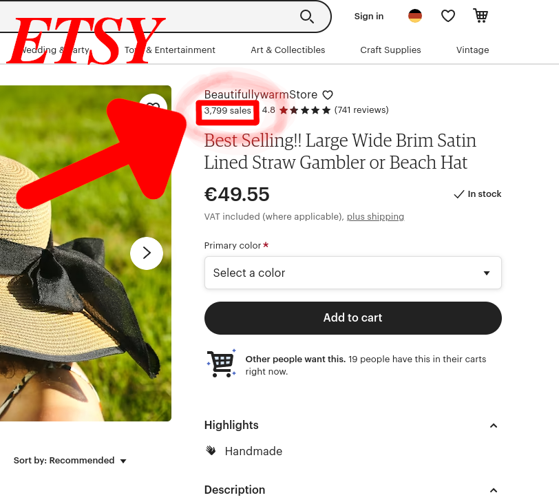
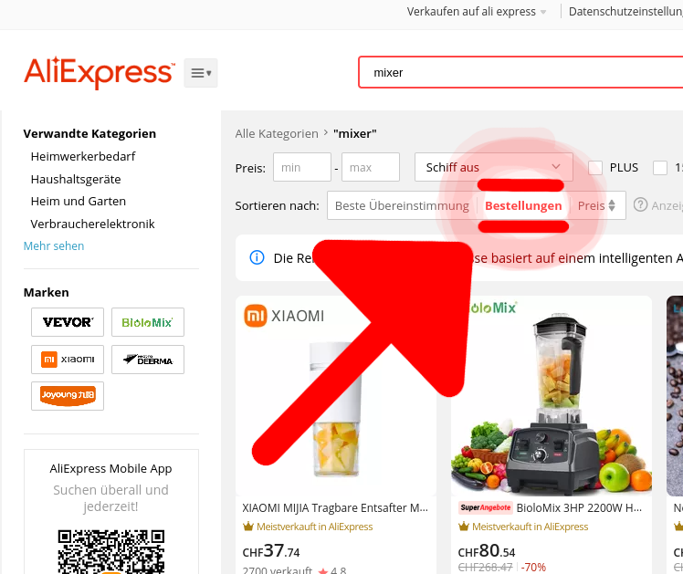

| Home | Erste Schritte | Videos | Webseiten | Händler | Trends finden |
|---|
Trends finden
Ad Library
Auf der Facebook Ad Library findest du schon aufgeschaltete Werbeanzeigen auf Facebook. Es kann nach Land gefiltert werden und man sieht auch die echte Werbeanzeige. Kann auch genutzt werden um andere Facebook Seiten zu finden, die Ware auf Facebook verkaufen.

Etsy
Schau nach Anzahl verkäufe
Etsy ist ein online Shop wie Amazon oder Aliexpress. Hier kann man nach Produkten suchen. Suche nach Produkten, klick auf ein Produkt. Dann siehts du oben rechts wie oft es verkauft wurde. Etsy kann leider nicht nach verkäufen Sortieren.

Aliexpress
Sortieren nach Anzahl Verkäufe
Nicht nur durch Privat Kunden sondern auch Dropshipping Betreiber die Ihre Produkte über Aliexpress kaufen, werden mit diesem Filter berücksichtig. Darum mach es sinn diesen Filter zu benutzten. So weiss man was am meisten verkauft wird von Dropshipping betreiber. Suche nach einem Produkt. Sortiere nach Bestellungen.
